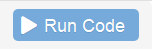

Dans ce premier module, nous allons progressivement :
comprendre ce qu’est-ce le fameux langage runique R
entamer les premiers dialogues avec R via une fenêtre de saisie : la console
et nous familiariser avec quelques uns des tics de langages de R
En cas de besoin, n’hésitez pas à solliciter un animateur circulant dans la salle.
R est un langage utilisé pour le traitement de données statistiques, dont la première version a été publiée en février 2000 par Robert Gentleman et Ross Ihaka. D’abord principalement diffusé parmi les chercheurs, R est aujourd’hui de plus en plus utilisé au sein des Instituts nationaux de statistiques.
R permet de faire des calculs statistiques, de les restituer sous forme de tableaux et également de tracer des graphiques et des cartes géographiques. Les résultats produits dans R peuvent être exportés dans des rapports et même être intégrés dans des applications web en ligne.
À la différence d’autres logiciels comme SAS, R est un logiciel libre : sa licence d’utilisation est gratuite et autorise chaque utilisateur à accéder, modifier ou redistribuer son code source. Le code source est l’équivalent du mode d’emploi pour la fabrication du logiciel. Il est aussi multi-plateforme. Cela signifie qu’il peut être executé sur plusieurs systèmes d’exploitation (Windows, MacOS, Linux…)
Sous ces lignes se trouve une console R et, à la manière d’une calculatrice, il est possible de lui demander de réaliser des calculs pour nous : tapez ci-dessous, dans la console, un calcul tel que 2 + 2 et appuyez sur le bouton “Run Code”  en haut à droite de la console pour faire executer le code et trouver la réponse en dessous :
R répond 4 et heureusement ! A l’avenir nous allons lui faire faire des choses beaucoup plus compliquées…
Notez que quand R répond à vos demandes, il commence toutes ses “phrases” par un numero de ligne, ici
[1]
Voici une console un peu plus grande qui contient des instructions pré-remplies, exécutez-les toujours avec le bouton pour voir comment R structure sa réponse à votre sollicitation :
2 + 2
2+2
2 + 2
2 - 2
12345678 * 4La console est un lieu de dialogue, vous commandez et R s’exécute ! Remarquons qu’il y a une réponse par instruction passée et que le nombre d’espaces est sans importance.
* est l’opérateur de multiplication. Les autres opérateurs utiles sont - pour la soustraction et / pour la division.
Essayez quelques calculs par vous-même :
Vos conversations dans le langage runique sont pour l’instant très limitées. Ce n’est pas ainsi que nous allons trouver le nombre d’enfants prénommés “Zelda” au royaume de Statis en 1985 !
Poursuivons notre dialogue avec R : nous allons lui demander d’afficher notre premier tableau de données. Après tout, c’est avec cette matière que nous allons avancer dans notre quête au royaume de Statis.
Le jeu de données des prénoms donnés aux statisiens depuis 1900 a été importé dans R, pour le faire apparaître, il suffit de taper prenoms dans la console :
Nous avons sous les yeux un jeu de données qui comporte 3763984 lignes et 6 colonnes. Nous l’avons fait apparaître en tapant son nom (prenoms) dans la console.
R n’en affiche que les 10 premières lignes et nous informe de sa taille d’emblée au moyen de ce descriptif :
# A tibble: 3,712,763 x 6
Nous appellerons les colonnes 6 des variables et les 3763984 lignes des observations.
Examinons les variables en présence :
year est l’année où le prénom a été recensé
sex est le sexe de l’enfant à la naissance
name est le prénom donné à l’enfant
n correspond au nombre d’enfants nés une année donnée pour un prénom donné, c’est l’effectif
dpt est le département de naissance de l’enfant
prop est la proportion d’enfants portant ce prénom pour une année et un département donné (il s’agit de l’effectif divisé par la somme des naissances dans le département)
(à voir ici si on conserve la colonne département et proportion)
Si nous disposons du jeu de données prenoms, il est difficile pour l’instant de répondre à la question qui nous intéresse ici : combien d’enfants ont été prénommés “Zelda” au royaume de Statis en 1985 ?
Nous apprendrons plus tard dans notre périple au royaume de Statis à filtrer des tableaux selon les critères qui nous intéressent. En attendant, le jeu de données zelda est mis à notre disposition pour répondre à la question qui nous brûle les lèvres.
Saurez-vous afficher le jeu de données zelda dans la console ?
Ceci est un test pour l’utilisation des puzzles de parsons :
Mettre les blocs dans le bon ordre :